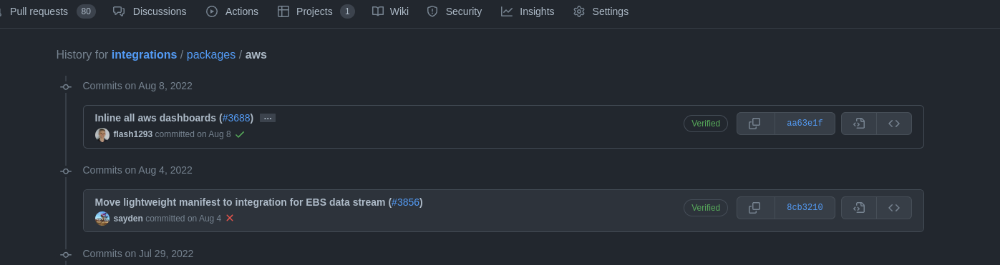
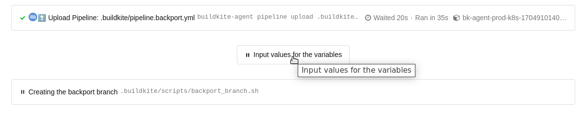

Release a bug fix for supporting older package version
editIn some cases, when we drop the support for an older version of the stack and later on find out needing to add a bug fix to the some old package version, we have to make some manual changes to release the bug fix to users. For example: in this PR (AWS package version 1.23.4), support for Kibana version 7.x was dropped and bumped the AWS package version from 1.19.5 to 1.20.0. But we found a bug in the EC2 dashboard that needs to be fixed with Kibana version 7.x. So instead of adding a new AWS package version 1.23.5, we need to fix it between 1.19.5 and 1.20.0.
Follow these detailed steps to release a fix for a given package version:
-
Find git commit (package version) that needs to be fixed
In the example above, the commit to be fixed is the one right before this PR updating package
aws:-
Using the web:
-
Look for the merge commit of the PR
- https://github.com/elastic/integrations/commit/aa63e1f6a61d2a017e1f88af2735db129cc68e0c
-
It can be found as one of the last messages in the PR

-
And then show the previous commits for that changeset inside the package folder (e.g.
packages/aws): - https://github.com/elastic/integrations/commits/aa63e1f6a61d2a017e1f88af2735db129cc68e0c/packages/aws/ 
-
-
Using the command line:
cd packages/<package_name> git log --grep "#<pr_id>" . git log -n 1 <merge_commit>^ . # following the example $ cd packages/aws $ git log --grep "#3688" commit aa63e1f6a61d2a017e1f88af2735db129cc68e0c Author: Joe Reuter <xx@email.de> Date: Mon Aug 8 17:14:55 2022 +0200 Inline all aws dashboards (#3688) * inline all aws dashboards * format * apply the right format * inline again * format $ git log -n 1 aa63e1f6a61d2a017e1f88af2735db129cc68e0c^ . commit 8cb321075afb9b77ea965e1373a03a603d9c9796 Author: Mario Castro <xx@gmail.com> Date: Thu Aug 4 16:52:06 2022 +0200 Move lightweight manifest to integration for EBS data stream (#3856)
-
-
Run the integrations-backport pipeline https://buildkite.com/elastic/integrations-backport for creating the backport branch.
Please, pay attention!, if you just run the pipeline it’ll wait for your inputs, nothing will happen without that.
Pipeline’s inputs:
-
DRY_RUN (default: "true"), If DRY_RUN is defined as "true" it will check:
- if the package is published,
- if the entered commit exists,
-
if the backport branch exists.
Also, it will create the local branch, update the branch with
.buildkiteand.cifolders, and remove other packages except the defined one (if set as input). This local branch will not be pushed to the upstream repository in this mode.
If DRY_RUN is defined as "false", in addition to written above it will create a commit and push the local branch to the upstream repository https://github.com/elastic/integrations.git. In this case, the name of the branch will be
+backport-${PACKAGE_NAME}-${TRIMMED_PACKAGE_VERSION}+, for example,backport-aws-1.19.- BASE_COMMIT (default: "") - enter the commit from the previous step (8cb321075afb9b77ea965e1373a03a603d9c9796)
- PACKAGE_NAME (default: "") - enter the package name, for example aws
- PACKAGE_VERSION (default: "") - enter the package version, for example: 1.19.7, 1.0.0-beta1
- REMOVE_OTHER_PACKAGES (default: "false") If REMOVE_OTHER_PACKAGES is defined as "true" all packages from the packages folder, except the defined package, will be removed from the created branch.
-
-
Create a PR for the bug fix
Create a new branch in your own remote (it is advised not using a branch name starting with
backport-), and apply bugfixes there. Remember to update the version in the package manifest (update patch version like1.19.<x+1>) and add a new changelog entry for this patch version.Once ready, open a PR selecting as a base branch the one created above:
backport-<package_name>-<package_major_version>.<package_minor_version>(e.g.backport-aws-1.19).Once this PR is merged, this new version of the package is going to be published automatically following the usual CI/CD jobs.
If it is needed to release a new fix for that version, there is no need to create a new branch. Just create a new PR to merge a new branch onto the same backport branch created previously.
-
Update changelog in main
Once PR has been merged in the corresponding backport branch (e.g.
backport-aws-1.9) and the package has been published, a new Pull Request should be created manually to update the changelog in the main branch to include the new version published in the backport branch. Take into account to add the changelog entry following the version order.In order to keep track, this new PR should have a reference (relates) to the backport PR too in its description.
-
Known issues and their solutions:
-
Missing shellinit command:
-
Example of the error: https://buildkite.com/elastic/integrations/builds/7634#018c87f4-7b0c-4d6f-8ddd-b779a9a7a019/507-512
Error: could not create kibana client: undefined environment variable: ELASTIC_PACKAGE_KIBANA_HOST. If you have started the Elastic stack using the elastic-package tool, please load stack environment variables using 'eval "$(elastic-package stack shellinit)"' or set their values manually -
Solution: add elastic-package stack shellinit command in
.buildkite/scripts/common.sh.-
eval "$(elastic-package stack shellinit)"
-
-
-
Not found license file:
-
Example of the error: https://buildkite.com/elastic/integrations/builds/7644#018c883c-546f-4d32-ab4a-71e919ddebf8/270-309
Error: checking package failed: building package failed: copying license text file: failure while looking for license "licenses/Elastic-2.0.txt" in repository: failed to find repository license: stat /opt/buildkite-agent/builds/bk-agent-prod-gcp-1703092724145948143/elastic/integrations/licenses/Elastic-2.0.txt: no such file or directory -
Solution: Remove line defining
ELASTIC_PACKAGE_REPOSITORY_LICENSEenvironment variable.
-
-